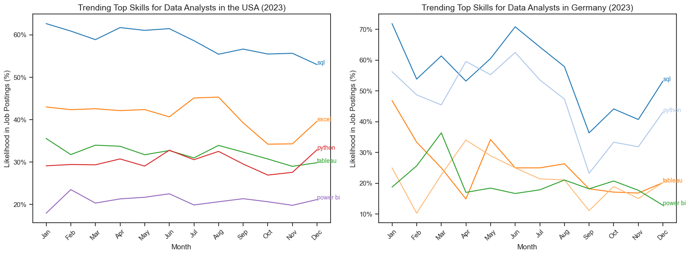
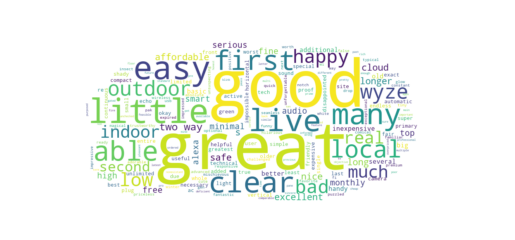
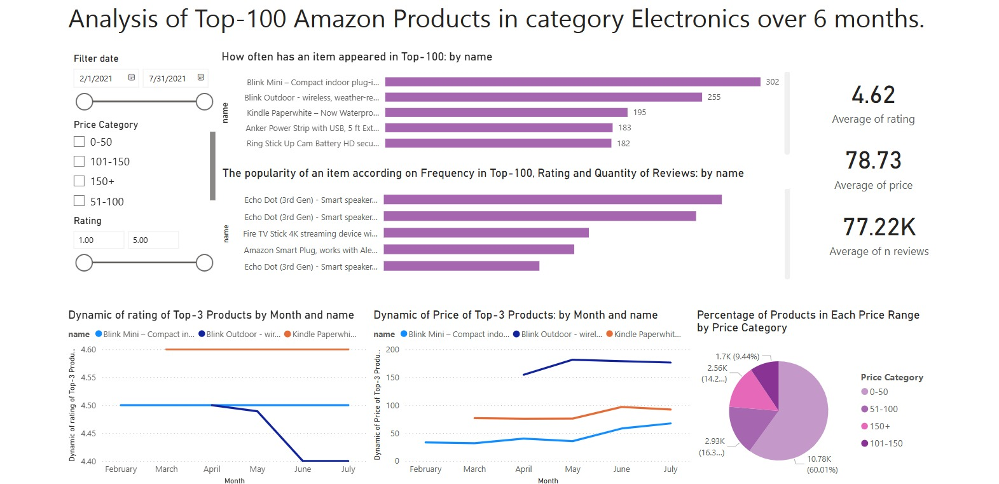
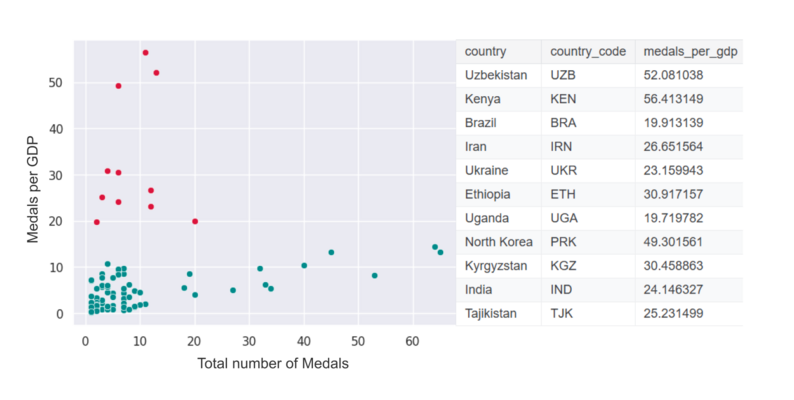

Analyzed Amazon's Top 100 Electronics dataset using Python and
SQL. Focused on data cleaning, structuring, and extracting key
business insights. Addressed important business questions through
data exploration and prepared the dataset for visualization and
reporting in Power BI.

Developed a web scraping pipeline to collect product reviews from
Amazon using Python. Cleaned and processed text data to extract
key themes and customer sentiments. The analysis was visualized
through a word cloud, highlighting the most frequently mentioned
words in customer feedback.

Designed an interactive Power BI dashboard to visualize key
business metrics and trends. Transformed raw data into actionable
insights through intuitive charts, graphs, and reports. The
project focused on enhancing data-driven decision-making with
clear, impactful visuals.

Performed statistical hypothesis testing and correlation analysis
on Olympic Games data using R Studio. Investigated relationships
between key performance indicators, such as GDP and medal count,
athlete characteristics, and historical trends. Applied
statistical tests, including t-tests and Linear Regression, to
derive meaningful insights.